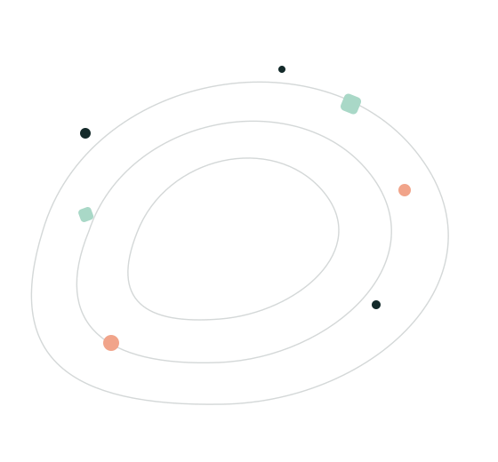
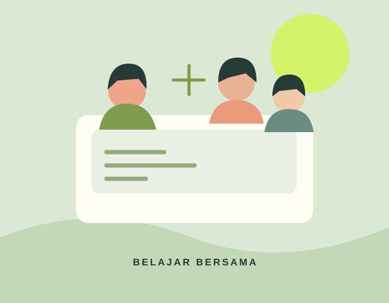
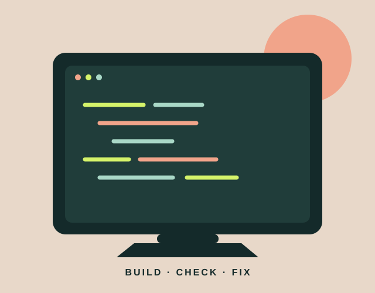
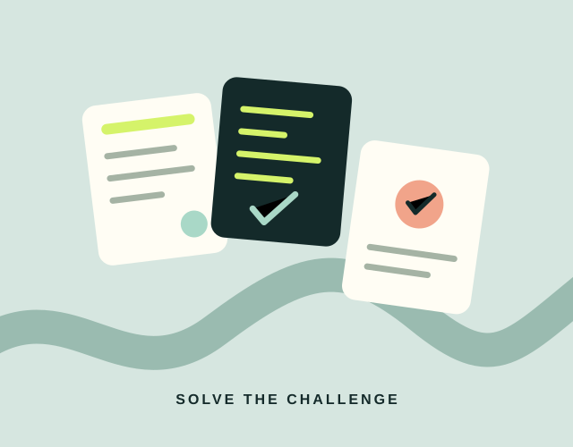
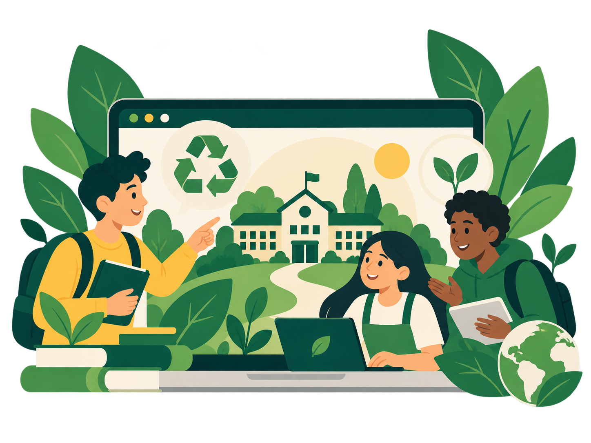
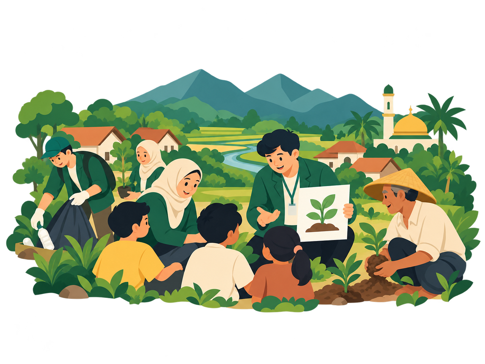

Merancang kegiatan yang memberi kesempatan kepada murid untuk mengambil peran dan terlibat dalam proses belajar.
PORTOFOLIO PROFESIONAL · SDGs 4.F
Belajar hari ini.
Memberi dampak
untuk masa depan.
Catatan perjalanan profesional, praktik pembelajaran Informatika, dan langkah kecil untuk menghadirkan pendidikan yang lebih berkualitas, partisipatif, dan bermakna.

FOKUS UTAMASDG 4Pendidikan berkualitas
✳ Belajar · Refleksi · BertumbuhProses berkelanjutan
04/17
PROFIL PROFESIONALREFLEKSI & AKSI NYATARENCANA 5 TAHUN
01 / TENTANG SAYA
Guru yang terus belajar,
bertumbuh bersama murid.
 PROFESIONAL × REFLEKTIF
PROFESIONAL × REFLEKTIFPROFIL SINGKAT
Tiara Destiana
Calon guru / Guru Informatika · Pendidikan Profesi Guru
Saya berfokus pada pengembangan pembelajaran Informatika yang mendorong murid berpikir kritis, memecahkan masalah, berkolaborasi, dan terlibat aktif dalam proses belajar. Bagi saya, pembelajaran bermakna tidak hanya menyampaikan materi, tetapi juga membuka ruang bagi setiap murid untuk mencoba, bertanya, dan berkembang.
BidangInformatika & pemrograman
Konteks praktikSMA Negeri 12 Bandung · XI-3
Minat profesionalPartisipasi, asesmen, kolaborasi
↗ Visi profesional
Menjadi pendidik reflektif dan adaptif yang berkontribusi pada pendidikan berkualitas melalui pembelajaran yang relevan, partisipatif, dan berkelanjutan.
02 / ARAH KONTRIBUSI
Pendidikan berkualitas
dimulai dari ruang kelas.
Saya menghubungkan pengembangan profesional dengan upaya menciptakan pengalaman belajar yang memberi ruang bagi murid untuk berlatih, berkolaborasi, dan bertanggung jawab atas prosesnya.
4
TUJUAN PEMBANGUNAN BERKELANJUTAN
Pendidikan Berkualitas
Mendukung pendidikan yang inklusif dan berkualitas serta kesempatan belajar sepanjang hayat untuk semua.
Fokus utama portofolio✳LEARN
FOR LIFE
FOR LIFE
Mendorong murid menerapkan konsep Informatika melalui latihan, tantangan, dan penyelesaian masalah.
Menggunakan pengalaman dan hasil pekerjaan murid sebagai bahan evaluasi dan perbaikan pembelajaran.
03 / PORTOFOLIO AKSI SDGs
Praktik nyata.
Refleksi yang berlanjut.
Tiga kegiatan pembelajaran Informatika yang berfokus pada keterlibatan murid, praktik pemrograman, dan penerapan konsep.

AKSI / 01Pembelajaran Kolaboratif & Pembagian Peran
Mendorong murid berdiskusi, berbagi tanggung jawab, dan terlibat dalam penyelesaian tugas kelompok.
Fokus kegiatan
Memberi tanggung jawab yang lebih jelas kepada anggota kelompok agar pembelajaran tidak hanya bergantung pada murid yang paling aktif.
▤ Bukti yang tersedia
Modul ajar, LKPD, dan lembar kerja murid
Lihat Artefak
↗

AKSI / 02Coding Clinic: BUILD–CHECK–FIX
Aktivitas penguatan pemrograman C++ melalui proses membangun program, memeriksa hasil, dan memperbaiki kesalahan.
Fokus kegiatan
Menyediakan tahapan latihan yang mendorong murid mencoba sendiri, memeriksa pekerjaannya, dan mencari cara memperbaiki kesalahan. Fokusnya adalah keterlibatan dalam proses, bukan klaim peningkatan nilai.
▤ Bukti yang tersedia
Modul / LKPD Coding Clinic dan lembar kerja murid
Lihat Artefak
↗

AKSI / 03Code Trail & Tantangan Pemrograman
Latihan pemrograman dalam bentuk tantangan di beberapa pos yang mengajak murid menerapkan konsep melalui soal bervariasi.
Fokus kegiatan
Memberikan pengalaman belajar aktif melalui pembacaan instruksi, analisis masalah, penentuan strategi, dan penyelesaian tantangan.
▤ Bukti yang tersedia
Modul / LKPD, kartu soal, dan lembar kerja murid
Lihat Artefak
↗

AKSI / 04Proyek Kepemimpinan Green School
Proyek kolaboratif yang memanfaatkan website sebagai media untuk menyampaikan informasi dan membangun wawasan mengenai lingkungan sekolah yang lebih peduli terhadap keberlanjutan.
Fokus kegiatan
Mengembangkan kemampuan kepemimpinan, kolaborasi, komunikasi, dan pemanfaatan teknologi melalui perancangan media edukasi berbasis website.
▤ Bukti yang tersedia
Website Green School yang dapat diakses secara langsung
Kunjungi Website
↗

AKSI / 05Pengabdian kepada Masyarakat di Garut
Kegiatan pengabdian yang memberikan pengalaman untuk terlibat secara langsung bersama masyarakat dan menerapkan peran pendidik dalam konteks yang lebih luas di luar pembelajaran formal di kelas.
Fokus kegiatan
Mengembangkan kepedulian sosial, kemampuan berkomunikasi, bekerja sama, dan menyesuaikan diri dengan kondisi masyarakat sebagai bagian dari pengembangan profesional calon guru.
▤ Bukti yang tersedia
Dokumentasi kegiatan Pengabdian kepada Masyarakat di Garut
Catatan dokumentasi: dampak berupa peningkatan hasil belajar atau keaktifan tidak dinyatakan sebagai hasil terukur jika belum ada data pendukung.
04 / PETA KARIER PROFESIONAL
Lima tahun untuk
bertumbuh dengan arah.
Rencana pengembangan bertahap yang dapat diperbarui sesuai pengalaman, kebutuhan murid, dan kesempatan pengembangan profesional.
TAHUN01
Memperkuat praktik pembelajaran
Mengembangkan perencanaan pembelajaran Informatika, strategi partisipasi murid, asesmen formatif, dan refleksi rutin.
Modul ajar · Refleksi · AsesmenTAHUN02
Mengembangkan inovasi pembelajaran
Menguji aktivitas dan media belajar Informatika yang bervariasi, serta mendokumentasikan respons dan hasil kerja murid.
Inovasi · Media belajar · DokumentasiTAHUN03
Membangun jejaring profesional
Aktif dalam komunitas belajar guru, berdiskusi dengan rekan sejawat, dan berbagi praktik baik yang relevan.
Komunitas belajar · KolaborasiTAHUN04
Mengembangkan praktik berbasis bukti
Menggunakan observasi, refleksi, dan hasil pekerjaan murid untuk mengevaluasi strategi serta menyusun perbaikan.
Evaluasi · Refleksi · PerbaikanTAHUN05
Membagikan dan memperluas praktik baik
Mendokumentasikan pengalaman yang bermanfaat, membagikannya melalui forum profesional, dan merancang kolaborasi berikutnya.
Portofolio · Berbagi · Keberlanjutan05 / RENCANA AKSI SDGs
Partisipasi aktif
dalam belajar Informatika.
Rancangan program satu tahun ajaran yang dapat disesuaikan dengan kebutuhan sekolah dan kondisi kelas.
Belajar Informatika,
Semua Berkontribusi
Program pengembangan pembelajaran yang berfokus pada pemerataan kesempatan berpartisipasi melalui aktivitas kolaboratif, tantangan pemrograman, dan refleksi proses belajar.
Alur pelaksanaan
01
Identifikasi kebutuhanMencatat situasi kelas, bentuk partisipasi, dan kendala pembelajaran.
02
Rancang aktivitasMenyiapkan pembagian peran, tantangan, dan petunjuk kerja yang jelas.
03
Laksanakan & amatiMenggunakan catatan observasi sederhana untuk mendokumentasikan keterlibatan murid.
04
Refleksi & perbaikanMengevaluasi catatan, hasil kerja, dan umpan balik untuk menentukan langkah selanjutnya.
Indikator keberhasilan
Tersedianya rancangan aktivitas, catatan keterlibatan murid, hasil kerja, dan refleksi yang digunakan untuk memperbaiki pembelajaran.
Dampak yang diharapkan
Kesempatan berpartisipasi lebih terencana dan praktik pembelajaran diperbaiki berdasarkan bukti yang dikumpulkan.
06 / REFLEKSI PROFESIONAL
Terus belajar,
terus memperbaiki.
Refleksi menghubungkan pengalaman mengajar dengan rencana pengembangan profesional selanjutnya.
01 · SDGs mana yang paling relevan?
SDG 4 Pendidikan Berkualitas menjadi tujuan yang paling relevan dengan peran saya sebagai calon guru Informatika. Bagi saya, pendidikan berkualitas tidak hanya berkaitan dengan pencapaian akademik, tetapi juga bagaimana murid memperoleh kesempatan untuk terlibat, berlatih, memecahkan masalah, berkolaborasi, dan mengembangkan potensinya. Melalui pembelajaran Informatika, saya ingin menghadirkan pengalaman belajar yang bermakna, adaptif terhadap perkembangan teknologi, serta sesuai dengan kebutuhan dan karakteristik murid.
02 · Bagaimana pengembangan profesionalitas guru dapat meningkatkan kontribusi?
Pengembangan profesionalitas guru membantu saya untuk terus meningkatkan kompetensi melalui proses belajar, refleksi, evaluasi, dan perbaikan praktik pembelajaran. Melalui perkuliahan, pengalaman selama PPL, diskusi dengan guru pamong dan rekan sejawat, saya semakin memahami bahwa menjadi guru bukan hanya tentang menguasai materi, tetapi juga mampu merancang pembelajaran yang sesuai dengan kebutuhan murid dan kondisi nyata di kelas. Ke depan, saya ingin terus memperluas wawasan melalui belajar mandiri, pelatihan, komunitas profesional, dan refleksi terhadap praktik mengajar agar dapat memberikan kontribusi yang lebih baik terhadap pendidikan berkualitas dan berkelanjutan.
03 · Dampak apa yang ingin diberikan dalam lima tahun?
Dalam lima tahun ke depan, saya ingin berkembang menjadi guru Informatika yang profesional, adaptif, kreatif, dan reflektif. Saya ingin menghadirkan pembelajaran yang lebih partisipatif, memberikan ruang bagi murid untuk mencoba dan berpikir, serta mengembangkan media dan strategi pembelajaran yang relevan dengan perkembangan teknologi. Saya juga ingin mulai mendokumentasikan praktik pembelajaran yang efektif dan berbagi pengalaman dengan rekan guru agar dampak yang diberikan tidak berhenti pada kelas yang saya ajar saja.
04 · Perubahan apa yang perlu dilakukan?
Saya perlu membangun kebiasaan untuk terus belajar dan melakukan refleksi secara lebih teratur. Selain memperkuat kompetensi Informatika, saya juga perlu meningkatkan kemampuan pedagogik, memahami karakteristik murid dengan lebih baik, serta mengumpulkan bukti proses pembelajaran secara lebih terstruktur. Saya juga perlu lebih terbuka terhadap umpan balik, mulai membangun jejaring profesional, dan berani mencoba inovasi pembelajaran yang sesuai dengan kebutuhan murid. Dengan proses tersebut, saya berharap dapat terus memperbaiki praktik mengajar dan memberikan kontribusi yang lebih nyata terhadap pendidikan yang berkualitas dan berkelanjutan.